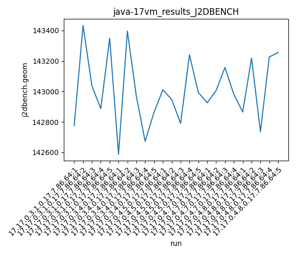
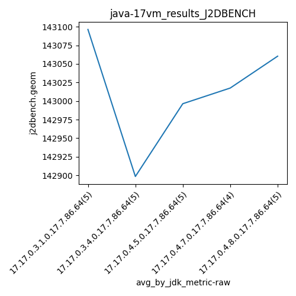
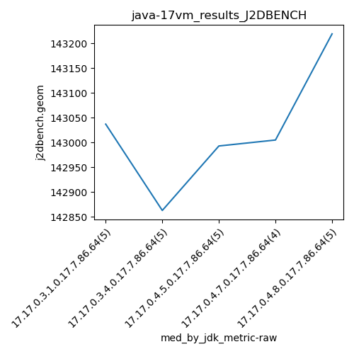
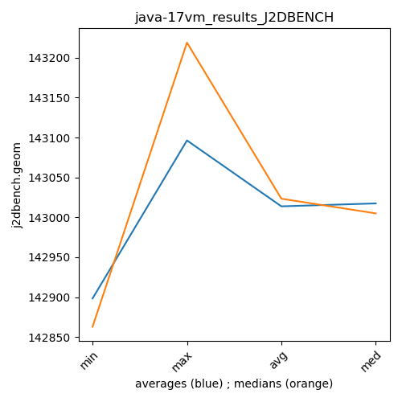

java-17 J2DBENCH
Context at bottom
/home/jvanek/git/benchmarks-in-nested-virtualisation-toolchain/final_results/vm_results/vm_results_RADARGUNs3
java-17
J2DBENCH
/home/jvanek/git/benchmarks-in-nested-virtualisation-toolchain/final_results/vm_results/vm_results_RADARGUNs1
java-17
J2DBENCH
/home/jvanek/git/benchmarks-in-nested-virtualisation-toolchain/final_results/vm_results/vm_results_DACAPO
java-17
J2DBENCH
/home/jvanek/git/benchmarks-in-nested-virtualisation-toolchain/final_results/vm_results/vm_results_JMH
java-17
J2DBENCH
/home/jvanek/git/benchmarks-in-nested-virtualisation-toolchain/final_results/vm_results/vm_results_J2DBENCH
java-17
J2DBENCH
vm_results_J2DBENCH
final score
Expected number of java-17 JDKs: 5
1st avgmed_alljdks_metric:
/home/jvanek/git/benchmarks-in-nested-virtualisation-toolchain/final_results/result_processing.py /home/jvanek/git/benchmarks-in-nested-virtualisation-toolchain/final_results/vm_results/vm_results_J2DBENCH j2dbench.geom False
values: [142776, 143433, 143037, 142887, 143349, 142588, 143396, 142972, 142673, 142863, 143011, 142947, 142790, 143241, 142993, 142926, 143005, 143157, 142982, 142865, 143219, 142736, 143226, 143256]

Expected number of iterations: 5
final number of values: 24 out of 25
Pass rate: 96.0%
values: (142588, 143433, 143013.66666666666, 142993)

** accuracy from all jdks and runs
more is better
MIN: 142588
MAX: 143433
AVG: 143013.66666666666
MED: 142993
Relative differences 1:
MIN-MAX: 1.0 %
MIN-AVG: 0.0 %
MIN-MED: 0.0 %
MAX-MIN: -1.0 %
MAX-AVG: -0.0 %
MAX-MED: -0.0 %
AVG-MED: -0.0 %
stored to java-17.properties. sort | uniq that!
2nd avgmed_by_jdk_metric:
values: [143096.4, 142898.4, 142996.4, 143017.5, 143060.4]

values: [143037, 142863, 142993, 143005, 143219]

values: (142898.4, 143096.4, 143013.82, 143017.5)
values: (142863, 143219, 143023.4, 143005)

** accuracy from all jdks where runs were avged
more is better
MIN: 142898.4
MAX: 143096.4
AVG: 143013.82
MED: 143017.5
Relative differences 1:
MIN-MAX: 0.0 %
MIN-AVG: 0.0 %
MIN-MED: 0.0 %
MAX-MIN: -0.0 %
MAX-AVG: -0.0 %
MAX-MED: -0.0 %
AVG-MED: 0.0 %
stored to java-17.properties. sort | uniq that!
** accuracy from all jdks where runs were medianed
more is better
MIN: 142863
MAX: 143219
AVG: 143023.4
MED: 143005
Relative differences 1:
MIN-MAX: 0.0 %
MIN-AVG: 0.0 %
MIN-MED: 0.0 %
MAX-MIN: -0.0 %
MAX-AVG: -0.0 %
MAX-MED: -0.0 %
AVG-MED: -0.0 %
stored to java-17.properties. sort | uniq that!
/home/jvanek/git/benchmarks-in-nested-virtualisation-toolchain/final_results/vm_results/vm_results_SPECJBB
java-17
J2DBENCH
pass rates:
vm_results_J2DBENCH=96.0%
Context:
- vm_results
- J2DBENCH